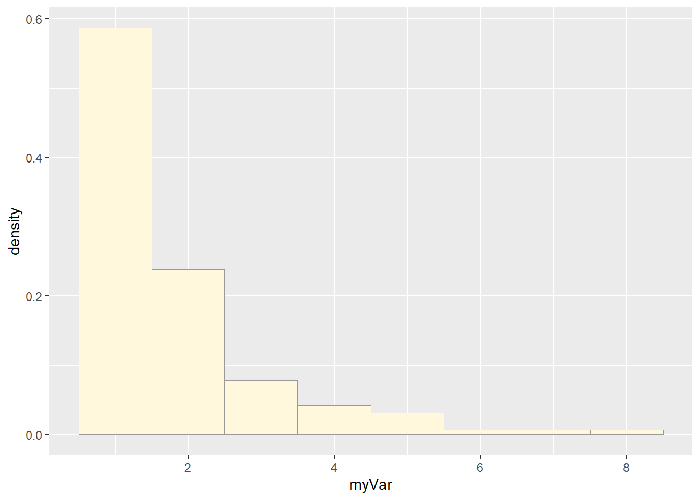
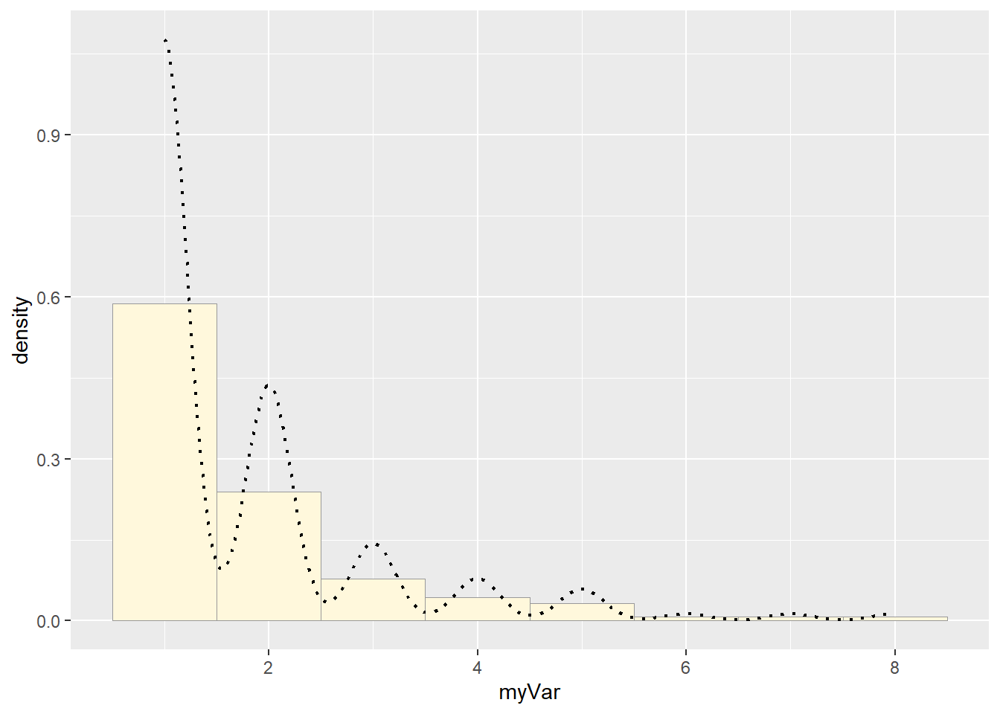
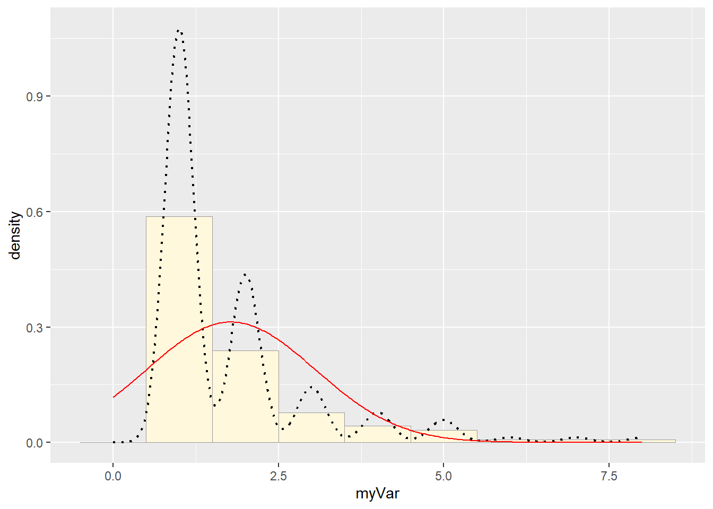
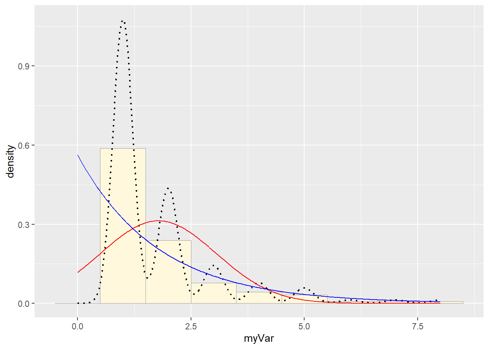
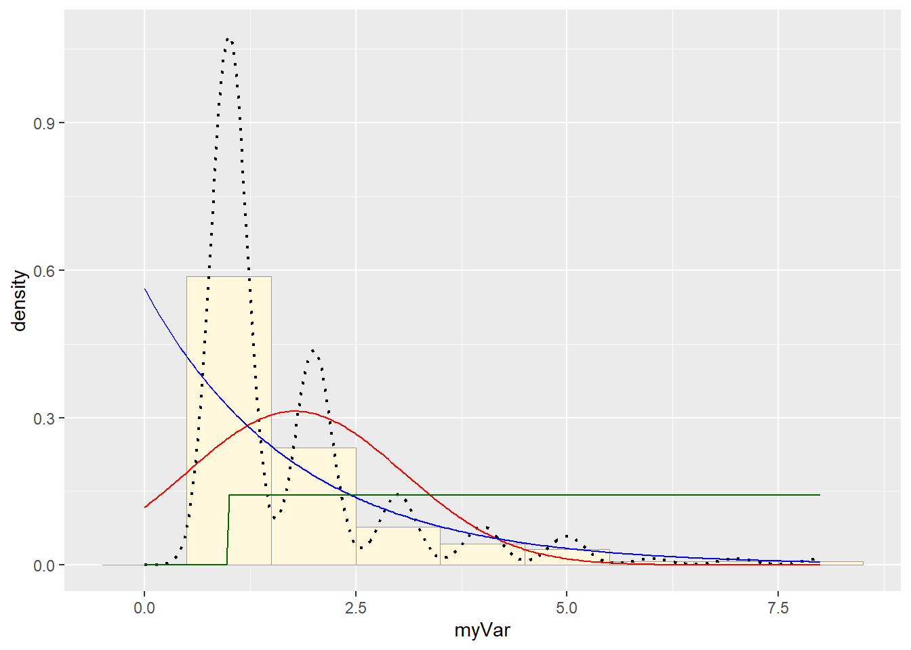
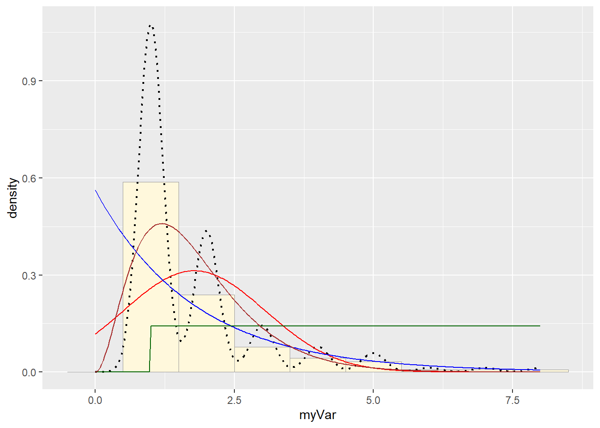
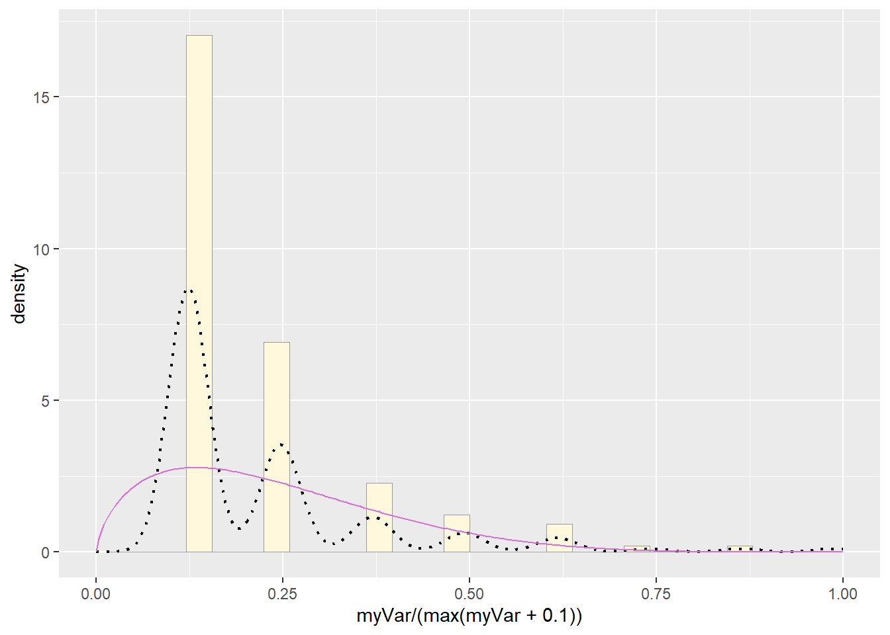
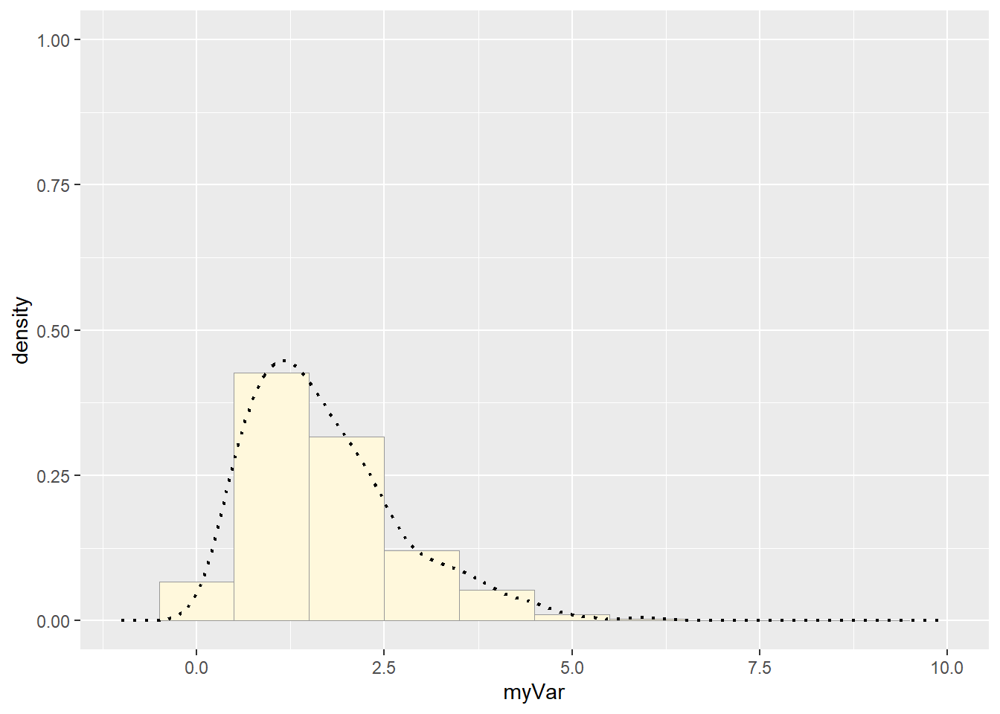
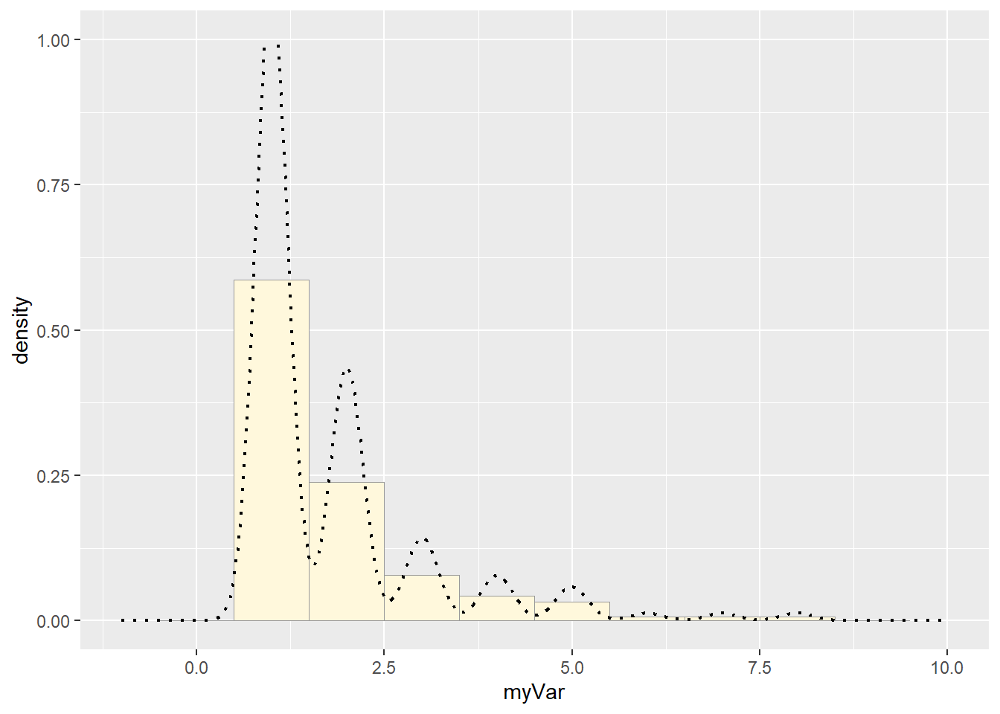

Run the sample code:
# Sample Data
# quick and dirty, a truncated normal distribution to work on the solution set
z <- rnorm(n=3000,mean=0.2)
z <- data.frame(1:3000,z)
names(z) <- list("ID","myVar")
z <- z[z$myVar>0,]
str(z)## 'data.frame': 1688 obs. of 2 variables:
## $ ID : int 1 10 12 13 14 16 17 18 21 22 ...
## $ myVar: num 1.63 0.35 0.181 0.762 0.55 ...Try it with your own data:
# My Data
# List of plant species with the number of moth species in family Sphingidae that plant has been recorded associating with in the iNat project Pollinator Interactions on Plants (located in the northeastern US)
z <- read.table("PlantSphingidaeCounts.csv",header=TRUE,sep=",")
# Duplicate column so as not to need to change code
z$myVar <- z$moth_taxon_countFind best-fitting distribution:
# Plot a histogram of the data
p1 <- ggplot(data=z, aes(x=myVar, y=..density..)) +
geom_histogram(binwidth = 1, color="grey60",fill="cornsilk",size=0.2) # had to add bindwidth = 1 for my data because otherwise exceeded 1## Warning: Using `size` aesthetic for lines was deprecated in ggplot2 3.4.0.
## ℹ Please use `linewidth` instead.
## This warning is displayed once every 8 hours.
## Call `lifecycle::last_lifecycle_warnings()` to see where this warning was
## generated.print(p1)## Warning: The dot-dot notation (`..density..`) was deprecated in ggplot2 3.4.0.
## ℹ Please use `after_stat(density)` instead.
## This warning is displayed once every 8 hours.
## Call `lifecycle::last_lifecycle_warnings()` to see where this warning was
## generated.
# Add empirical density curve
p1 <- p1 + geom_density(linetype="dotted",size=0.75)
print(p1)
# Get maximum likelihood parameters for normal
normPars <- fitdistr(z$myVar,"normal")
# Plot normal probability density
meanML <- normPars$estimate["mean"]
sdML <- normPars$estimate["sd"]
xval <- seq(0,max(z$myVar),len=length(z$myVar))
stat <- stat_function(aes(x = xval, y = ..y..), fun = dnorm, colour="red", n = length(z$myVar), args = list(mean = meanML, sd = sdML))
p1 + stat
# Plot exponential probability density
expoPars <- fitdistr(z$myVar,"exponential")
rateML <- expoPars$estimate["rate"]
stat2 <- stat_function(aes(x = xval, y = ..y..), fun = dexp, colour="blue", n = length(z$myVar), args = list(rate=rateML))
p1 + stat + stat2
# Plot uniform probability density
stat3 <- stat_function(aes(x = xval, y = ..y..), fun = dunif, colour="darkgreen", n = length(z$myVar), args = list(min=min(z$myVar), max=max(z$myVar)))
p1 + stat + stat2 + stat3
# Plot gamma probability density
gammaPars <- fitdistr(z$myVar,"gamma")
shapeML <- gammaPars$estimate["shape"]
rateML <- gammaPars$estimate["rate"]
stat4 <- stat_function(aes(x = xval, y = ..y..), fun = dgamma, colour="brown", n = length(z$myVar), args = list(shape=shapeML, rate=rateML))
p1 + stat + stat2 + stat3 + stat4
# Plot beta probability density
pSpecial <- ggplot(data=z, aes(x=myVar/(max(myVar + 0.1)), y=..density..)) +
geom_histogram(color="grey60",fill="cornsilk",size=0.2) +
xlim(c(0,1)) +
geom_density(size=0.75,linetype="dotted")
betaPars <- fitdistr(x=z$myVar/max(z$myVar + 0.1),start=list(shape1=1,shape2=2),"beta")## Warning in densfun(x, parm[1], parm[2], ...): NaNs produced
## Warning in densfun(x, parm[1], parm[2], ...): NaNs produced
## Warning in densfun(x, parm[1], parm[2], ...): NaNs producedshape1ML <- betaPars$estimate["shape1"]
shape2ML <- betaPars$estimate["shape2"]
statSpecial <- stat_function(aes(x = xval, y = ..y..), fun = dbeta, colour="orchid", n = length(z$myVar), args = list(shape1=shape1ML,shape2=shape2ML))
pSpecial + statSpecial## `stat_bin()` using `bins = 30`. Pick better value with `binwidth`.## Warning: Removed 2 rows containing missing values or values outside the scale range
## (`geom_bar()`).
Simulate a new data set: None of the options fit well, but I’d say the gamma was the best, so let’s use that:
# create new data using the gamma distribution with parameters:
## shapeML = 3.049456
## rateML = 1.713732
# my original dataset was of length(z$myVar) = 281
z2 <- rgamma(n=281,shape=shapeML,rate=rateML)
z2 <- data.frame(1:281,z2)
head(z2)## X1.281 z2
## 1 1 0.8487613
## 2 2 1.5548004
## 3 3 2.1909004
## 4 4 3.6537293
## 5 5 4.4086211
## 6 6 2.0657741names(z2) <- list("ID","myVar")
z2 <- z2[z2$myVar>0,]
# plot the new dataset
x1 <- ggplot(data=z2, aes(x=myVar, y=..density..)) +
geom_histogram(binwidth = 1, color="grey60",fill="cornsilk",size=0.2) + # had to add bindwidth = 1 for my data because otherwise exceeded 1
scale_y_continuous(limits = c(NA, 1)) +
scale_x_continuous(limits = c(-1, 10))
x1 <- x1 + geom_density(linetype="dotted",size=0.75)
print(x1)## Warning: Removed 2 rows containing missing values or values outside the scale range
## (`geom_bar()`). Compare with real data:
#plot the real dataset again
p1 <- ggplot(data=z, aes(x=myVar, y=..density..)) +
geom_histogram(binwidth = 1, color="grey60",fill="cornsilk",size=0.2) + # had to add bindwidth = 1 for my data because otherwise exceeded 1
scale_y_continuous(limits = c(NA, 1)) +
scale_x_continuous(limits = c(-1, 10))
p1 <- p1 + geom_density(linetype="dotted",size=0.75)
print(p1)## Warning: Removed 2 rows containing missing values or values outside the scale range
## (`geom_bar()`).
How do the two histogram profiles compare? Do you think the model is doing a good job of simulating realistic data that match your original measurements? Why or why not?
They aren’t very similar. The gamma distribution was the best of the available options, but it wasn’t actually a good fit at all.
They also look different because rgamma generates continuous data, where mine was discrete, so the best fit curve isn’t bouncy